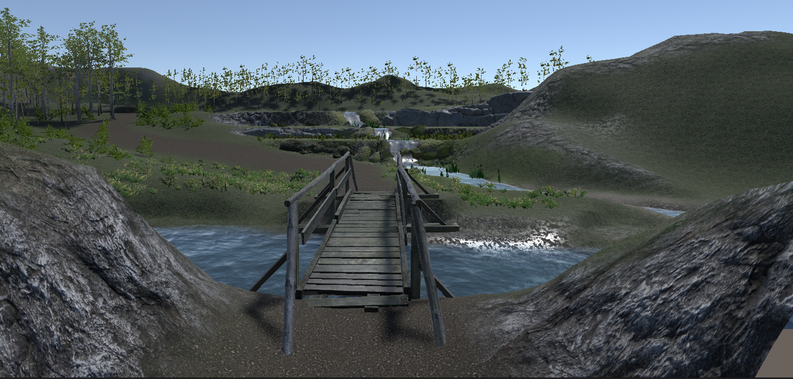
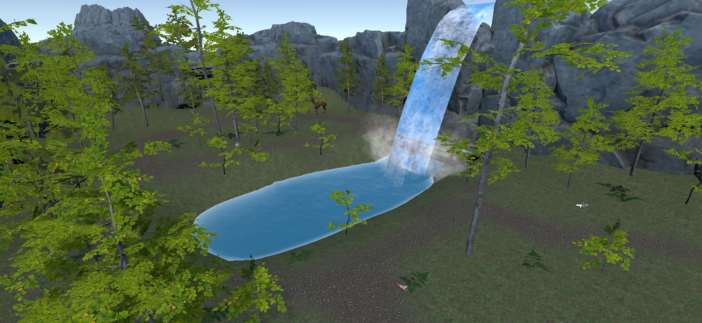

PhD Research
Exploring Virtual Reality as a Co-designed Sensory Regulation Tool for Autistic Adults
My PhD investigated whether virtual reality could provide autistic adults with a portable, personalised, and person-centred solution to sensory processing challenges - and crucially, whether that technology could be developed with them rather than simply for them.
The research was structured across three studies, each building on the last. The first surveyed autistic adults on their sensory and relaxation preferences. The second used those findings as the foundation for an iterative co-design process, producing a VR sensory application shaped by the people it was built for. The third took that application to standalone hardware for a real-world exploratory evaluation.
Across all three studies, participatory methods were central. Autistic adults were involved not just as research participants but as active contributors to the design and direction of the work. The findings not only shaped the application itself but raised broader questions about how sensory interventions are designed, evaluated, and for whom.
The thesis includes one published paper, one paper currently under peer review, and one chapter in preparation for submission.

Study 1: Sensory & Relaxation Preferences
Surveying autistic adults on their sensory and relaxation preferences to inform the design of calming spaces and sensory environments.
Study 2: Co-designing the VR Sensory Application
An iterative co-design process with autistic adults, producing a VR sensory application shaped by the people it was built for.

Study 3: Standalone Evaluation
Taking the co-designed sensory application to standalone hardware for a real-world exploratory evaluation.